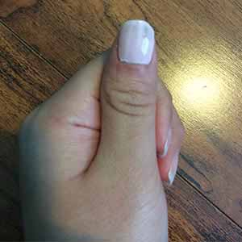
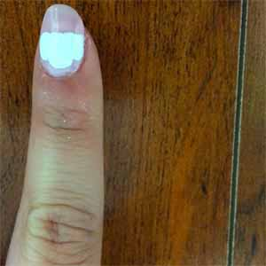
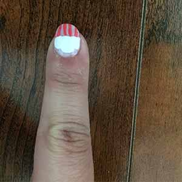
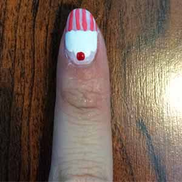

♠ Cupcake Nails ♠
Materials: Sally Hansen Hard as Nails, Hard-core Party
Sally Hansen Hard as Nails, Hard to Get
Sally Hansen Hard as Nails Xtreme Wear, Coral Reef
Sinful Color, Ruby Ruby
OPI Base Coat
Dotting tool and Painting brush
| Step 1: Apply the base coat on your nails first. |

|
| Step 2: Use the pale pink nail polish (Sally Hansen Hard as Nails, Hard-core Party) to apply as the base color of your nails. You may apply it 2-3 times in order to make sure that it look solid enough. |  |
| Step 3: Wait until the base color is completely dry. Now we are really doing the art part! Dip your paint brush in coral nail polish (Sally Hansen Hard as Nails Xtream Wear, Coral Reef) and start drawing vertical lines on your nails. During this step, you may find it a little bit hard to draw nice vertical lines, don't piss off if they don't look very nice as you expect. Try to hold the brush stably and slowly draw the lines. |

|
| Step 4: Dip your dotting tool in white nail polish(Sally Hansen Hard as Nails, Hard to get) and paint the white circle with ridged base or the cloud-like shape. |  |
| Step 5: Dip the painting brush in coral nail polish and draw some vertical lines under the cloud-like shape that you make in step4. |  |
| Step 6: Finally, dip your dotting tool in red nail polish (Sinful Color, Ruby Ruby) and dot a circle on top of the white circle. |  |
-Nail Art Tutorials-